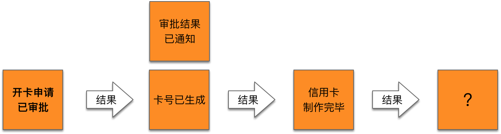
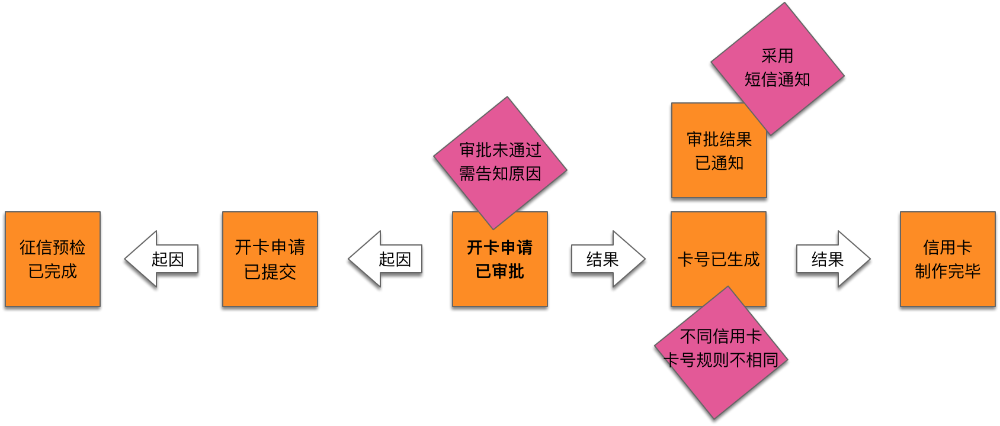

- 001 「战略篇」访谈 DDD 和微服务是什么关系？.md.html
- 002 「战略篇」开篇词：领域驱动设计，重焕青春的设计经典.md.html
- 003 领域驱动设计概览.md.html
- 004 深入分析软件的复杂度.md.html
- 005 控制软件复杂度的原则.md.html
- 006 领域驱动设计对软件复杂度的应对（上）.md.html
- 007 领域驱动设计对软件复杂度的应对（下）.md.html
- 008 软件开发团队的沟通与协作.md.html
- 009 运用领域场景分析提炼领域知识（上）.md.html
- 010 运用领域场景分析提炼领域知识（下）.md.html
- 011 建立统一语言.md.html
- 012 理解限界上下文.md.html
- 013 限界上下文的控制力（上）.md.html
- 014 限界上下文的控制力（下）.md.html
- 015 识别限界上下文（上）.md.html
- 016 识别限界上下文（下）.md.html
- 017 理解上下文映射.md.html
- 018 上下文映射的团队协作模式.md.html
- 019 上下文映射的通信集成模式.md.html
- 020 辨别限界上下文的协作关系（上）.md.html
- 021 辨别限界上下文的协作关系（下）.md.html
- 022 认识分层架构.md.html
- 023 分层架构的演化.md.html
- 024 领域驱动架构的演进.md.html
- 025 案例 层次的职责与协作关系（图文篇）.md.html
- 026 限界上下文与架构.md.html
- 027 限界上下文对架构的影响.md.html
- 028 领域驱动设计的代码模型.md.html
- 029 代码模型的架构决策.md.html
- 030 实践 先启阶段的需求分析.md.html
- 031 实践 先启阶段的领域场景分析（上）.md.html
- 032 实践 先启阶段的领域场景分析（下）.md.html
- 033 实践 识别限界上下文.md.html
- 034 实践 确定限界上下文的协作关系.md.html
- 035 实践 EAS 的整体架构.md.html
- 036 「战术篇」访谈：DDD 能帮开发团队提高设计水平吗？.md.html
- 037 「战术篇」开篇词：领域驱动设计的不确定性.md.html
- 038 什么是模型.md.html
- 039 数据分析模型.md.html
- 040 数据设计模型.md.html
- 041 数据模型与对象模型.md.html
- 042 数据实现模型.md.html
- 043 案例 培训管理系统.md.html
- 044 服务资源模型.md.html
- 045 服务行为模型.md.html
- 046 服务设计模型.md.html
- 047 领域模型驱动设计.md.html
- 048 领域实现模型.md.html
- 049 理解领域模型.md.html
- 050 领域模型与结构范式.md.html
- 051 领域模型与对象范式（上）.md.html
- 052 领域模型与对象范式（中）.md.html
- 053 领域模型与对象范式（下）.md.html
- 054 领域模型与函数范式.md.html
- 055 领域驱动分层架构与对象模型.md.html
- 056 统一语言与领域分析模型.md.html
- 057 精炼领域分析模型.md.html
- 058 彩色 UML 与彩色建模.md.html
- 059 四色建模法.md.html
- 060 案例 订单核心流程的四色建模.md.html
- 061 事件风暴与业务全景探索.md.html
- 062 事件风暴与领域分析建模.md.html
- 063 案例 订单核心流程的事件风暴.md.html
- 064 表达领域设计模型.md.html
- 065 实体.md.html
- 066 值对象.md.html
- 067 对象图与聚合.md.html
- 068 聚合设计原则.md.html
- 069 聚合之间的关系.md.html
- 070 聚合的设计过程.md.html
- 071 案例 培训领域模型的聚合设计.md.html
- 072 领域模型对象的生命周期-工厂.md.html
- 073 领域模型对象的生命周期-资源库.md.html
- 074 领域服务.md.html
- 075 案例 领域设计模型的价值.md.html
- 076 应用服务.md.html
- 077 场景的设计驱动力.md.html
- 078 案例 薪资管理系统的场景驱动设计.md.html
- 079 场景驱动设计与 DCI 模式.md.html
- 080 领域事件.md.html
- 081 发布者—订阅者模式.md.html
- 082 事件溯源模式.md.html
- 083 测试优先的领域实现建模.md.html
- 084 深入理解简单设计.md.html
- 085 案例 薪资管理系统的测试驱动开发（上）.md.html
- 086 案例 薪资管理系统的测试驱动开发（下）.md.html
- 087 对象关系映射（上）.md.html
- 088 对象关系映射（下）.md.html
- 089 领域模型与数据模型.md.html
- 090 领域驱动设计对持久化的影响.md.html
- 091 领域驱动设计体系.md.html
- 092 子领域与限界上下文.md.html
- 093 限界上下文的边界与协作.md.html
- 094 限界上下文之间的分布式通信.md.html
- 095 命令查询职责分离.md.html
- 096 分布式柔性事务.md.html
- 097 设计概念的统一语言.md.html
- 098 模型对象.md.html
- 099 领域驱动设计参考过程模型.md.html
- 100 领域驱动设计的精髓.md.html
- 101 实践 员工上下文的领域建模.md.html
- 102 实践 考勤上下文的领域建模.md.html
- 103 实践 项目上下文的领域建模.md.html
- 104 实践 培训上下文的业务需求.md.html
- 105 实践 培训上下文的领域分析建模.md.html
- 106 实践 培训上下文的领域设计建模.md.html
- 107 实践 培训上下文的领域实现建模.md.html
- 108 实践 EAS 系统的代码模型.md.html
- 109 后记：如何学习领域驱动设计.md.html
061 事件风暴与业务全景探索
我在尝试事件风暴之前，纳闷于 Alberto Brandolini 为何选择“事件”作为领域建模的突破口。倘若不选择 EDA（Event Driven Architecture，事件驱动架构）或者 CQRS 架构模式，事件是否真正重要呢？
理解事件的本质
Martin Fowler 认为：“重要的事件肯定会在系统其他地方引起反应，因此理解为什么会有这些反应同样也很重要。”显然，事件意味着一种因果关系，这就使得这样一个静态的概念，其实隐藏着流动的张力。在识别和理解事件时，可以考虑为什么要产生这一事件，以及为什么要响应这一事件，进而思考响应事件的后续动作，从而驱动着设计者的“心流”不断思考下去，犹如搅动了一场激荡湍急的风暴。
不同的团队角色在思考事件时，看到的可能是事物的不同一面，事件犹如棱镜一般将不同色彩的光线折射到每个人的眼睛之中：
- 事件对于业务人员：事件前后的业务动作是什么？产生了什么样的业务流程？
- 事件对于管理人员：事件导致的重要结果是什么？会否影响到管理和运营？
- 事件对于技术人员：是什么触发了事件消息？当事件消息发布时，谁来负责订阅和处理事件？
虽然关注点不同，但事件却能够让这些不同的团队角色“团结”到一个业务场景下，体会到统一语言的存在。业务场景仿佛是一条新闻报道，团队的参与角色就是阅读新闻报道的读者，他们关注新闻的目的各不相同，却又不约而同地被同一个新闻标题所吸引。这个新闻的标题，就是事件。例如 2019 年 6 月 17 日，沪伦通正式启动，国内外新闻媒体皆有报道，如下图所示：
当这条影响国内甚至国际金融界的重磅事件发布之后，吸引了许多人尤其是广大投资人的眼球。角色不同，对这一新闻事件的着眼点也不相同。经济学家关心此次事件对证券交易市场特别是对上交所、伦交所带来的影响，政治家关心这种金融互通机制对中英以及中欧之间政治格局带来的影响，股市投资人关心如何进入沪伦通进行股票交易以谋求高额投资回报，证券专业人士则关心沪伦通这种基于存托凭证（DR）的跨境转换方式和交易模式……不一而足，你方唱罢我登场，关心的却是同一个新闻事件。
之所以将事件比喻为新闻，还在于它们之间存在本质的共同点：它们都是过去已经发生的事实。新闻不可能报道未来，即使是对未来的预测，预测这个行为也是在过去的某个时间点发生的。整条新闻报道的背景就是该事件的场景要素：
| 场景要素 | 新闻 | 事件 |
|---|---|---|
| What | 报道的新闻 | 发布的事件 |
| When | 新闻事件的发生时间 | 何时发布事件 |
| Where | 新闻事件的发生地点 | 在哪个限界上下文的哪个聚合 |
| Why | 为何会发生这样一起新闻事件 | 发布事件的原因以及事件结果的重要性 |
| Who | 新闻事件的牵涉群体 | 谁发布了事件，谁订阅了事件 |
| How | 新闻事件的发生经过 | 事件如何沿着时间轴流动 |
在运用事件风暴时，我们可以像一名记者那样敏感地关注着一些关键事件的发生，并按照时间轴的顺序把这些事件串起来。设想乘坐地铁的场景：
- 车票被购买了（TicketPurchased）：我只关心票买了，并不关心是怎么支付的；
- 车票有效（TicketAccepted）：我只关心闸机认可了车票的有效性，并不关系是刷卡还是插入卡片；
- 闸机门打开（StationGateOpened）：门打开了是刷卡有效的结果，意味着我可以通行，我并不关心之前闸机门的状态，例如某些地铁站在人流高峰期会保持闸机门常开；
- 乘客通过闸机门（PassengerPassed）：我一旦通过闸机，就可以等候地铁准备上车，我并不关心通过之后闸机门的状态；
- 地铁到站（MetroArrived）：是否是我要乘坐的地铁到站？如果是，我就要准备上车，我并不关心地铁是如何行驶的；
- 地铁车门打开（MetroGateOpened）：只有车门打开了，我才能上车，我并不关心车门是如何打开的；
- ……
这就是与时间相关的一系列事件。分析乘坐地铁的业务场景，识别出一系列“关键事件”并将其连接起来，就会形成一条显而易见的基于时间轴的事件路径。如下图所示：
以事件为领域分析建模的关注起点，就可以让开发团队与业务人员（包括领域专家）都能够关注每个环节的结果，而不考虑每个环节的实现。事件可以让整个团队在事件风暴过程中统一到领域模型中。同时，这种以“事件”为核心的建模思路，实则也改变了我们观察业务领域的世界观。在事件风暴的眼中，领域的世界是一系列事件的留存。这些因业务活动留下的不可磨灭的足迹牵涉到状态之迁移，事实之发生，它们忠实地记录了每次执行命令后产生的结果。如上所述，乘坐地铁的事件路径实则是乘客、闸机、地铁等多个领域对象的状态迁移。这种状态迁移过程体现了业务之间的因果关系。
事件风暴的事件通常被称之为“领域事件”，它具备以下四个特征：
- 领域事件是过去发生的与业务有关的事实
- 领域事件是管理者和运营者重点关心的内容，若缺少该事件，会对管理与运营产生影响
- 领域事件具有时间点的特征，所有事件连接起来会形成明显的时间轴
- 领域事件会导致目标对象状态的变化
既然事件代表一个已经发生的事实，因此就应该使用动词的过去时态来表达，例如 OrderConfirmed 事件、OrderCompleted 事件。从自然语言的语法角度讲，中文确乎不适合描述事件，因为中文语法并没有“时态”的概念，这使得我们在描述事件时，显得词语过于贫乏，只能加上“已”字来体现它是过去发生的。OrderCreated 事件被描述为“订单已创建”，OrderCompleted 事件被描述为“订单已完成”。因为没有时态，使得我们对时间不那么敏感，在进行事件建模时，稍显不适应，这是我在很多团队中感受到的现象。
我在最初接触事件风暴时，正是考虑到多数人对事件的不够敏感，又或者建模世界观的不易扭转，倾向于围绕着“用例”进行建模。多数开发人员更容易理解用例而非事件，领域专家也能接受用例的形式；但它与事件相比，也存在一些天生的不足：
- 用例没有时间的概念，它是对业务场景和业务功能的静态划分，无法形成动态的流程，往往要用活动图或流程图来弥补；
- 命令和查询是两种不同的操作，它们导致的结果与意义并不相同，而用例却未曾区分它们。
事件弥补了用例的不足。事件自身具备时间特征，使得业务场景的事件一经识别，就能形成动态的流程。由于事件会导致目标对象状态的变更，说明唯有命令才会触发事件，这就要求我们在开展事件风暴时，需要区分命令和查询。除此之外，事件在参与业务流程中，代表了不同时刻的因果关系。首先，事件是“果”。触发事件的起因包括：
- 由用户活动触发：例如用户将商品加入到购物车，触发 ProductAddedToCart 事件。
- 当条件满足时：提交订单后超过规定时间未支付，触发 OrderCancelled 事件。
- 外部系统：支付系统返回交易凭证，触发 PaymentCompleted 事件。
事件又是“因”。当事件发布之后，所有关心该事件的订阅者随之会执行新的命令，触发下一个流程步骤。例如支付完成（PaymentCompleted）事件会触发准备订单（Prepare Order）的命令。
事件的因与果体现为事件的发布与订阅，这两种对事件的操作形成了因果关系的不断传递。
事件风暴建模工作坊
事件风暴是一种高度强调交流与协作的可视化工作坊，是大白纸与各色即时贴的重度使用者。面对着糊满整面墙的大白纸，工作坊的参与人员通过充分地交流与沟通，然后用马克笔在各色即时贴上写下各个领域模型概念，贴在墙上呈现生动的模型。由于这些模型都是可视化的，就可以给团队直观印象。大家站在墙面前，观察这些模型，及时开展讨论。若发现有误，就可以通过移动即时贴来调整与更新，也可以随时贴上新的即时贴完善建模结果。
Alberto Brandolini 设计的事件风暴通常分为两个层次。如果在工作坊过程中将主要的精力用于寻找业务流程中产生的领域事件，则这个过程可以认为是宏观级别的事件风暴，其目的是探索业务全景（Big Picture Exploration）。在识别出全景事件流之后，就可以标记时间轴的关键时间点作为划分领域边界和限界上下文边界的依据；同时也可以基于事件表达的业务概念对领域进行划分，最终确定候选的子领域和限界上下文。另一个层次则属于设计级别（Design-level）的领域分析建模方法，通过探索业务全景获得的事件流，围绕着事件获得领域分析模型。这些领域分析建模要素除了领域事件之外，还包括决策命令、读模型和聚合。事件风暴的领域分析建模方法通常会以业务全景探索的结果作为领域分析建模的基础。
探索业务全景
在探索业务全景的过程中，为了使每个人保持专注，一开始要排除其余领域概念的干扰，一心寻找沿着时间轴发展的事件。事件是事件风暴的主要驱动力，寻找出来的事件则是领域分析模型的骨架。事件风暴使用橙色即时贴来代表一个事件（Event）。
事件风暴工作坊要求沿着时间轴对事件进行识别。通常的做法是由领域专家贴上第一张他/她最为关心的事件，然后由大家分头围绕该事件写出在它之前和之后发生的事件，并按照时间顺序由左向右排列。以信用卡申请开卡的业务为例，领域专家认为“开卡申请已审批”是我们关注的核心事件，于是就可以在整面墙的中间贴上橙色即时贴，上面写上“开卡申请已审批”事件：
在确定这个核心事件之后，我们就要以此为中心，向前推导它的起因，向后推导它的结果，根据这种因果关系层层推进，逐渐形成一条或多条沿着时间轴且彼此之间存在因果关系的事件流：
在识别事件的过程中，工作坊的参与人员应尽可能站在管理和运营的角度去思考领域事件。这里所谓的“因果关系”，也可以理解为产生事件的前置条件是什么，由此推导出前置事件；事件导致的后置条件是什么，由此推导出后置事件。
从“开卡申请已审批”事件往前推导，它的前置条件是什么呢？显然，只有在信用卡申请人提交了开卡申请之后才可能审批申请，由此得到前置事件“开卡申请已提交”。以此类推，“开卡申请已提交”的前置条件又是什么呢？申请人在提交申请信息之前，需要通过征信系统对填写的内容做征信预检，于是可推导出前置事件“征信预检已完成”：
从“开卡申请已审批”事件往后推导，它的后置条件是什么呢？如果开卡申请通过了，一方面保证申请人收到审批结果通知，另一方面则开始制卡，首先就需要保证信用卡号已经生成，由此得到两个并行的后置事件“卡号已生成”和“审批结果已通知”。接着，在“卡号已生成”事件之后，就是等待制作信用卡的结果，由此获得后置事件“信用卡制作完毕”：

事件风暴是一种探索性的建模活动。在探索事件的过程中，我们不要急于去识别其他的领域对象，基于事件结果，也不要急于去寻找导致事件发生的起因。尤其是在探索业务全景期间，更要如此。毕竟人的注意力是有限的。从一开始，就应该让工作坊的参与人员集中精力专注于事件。倘若存在疑问，又或者需要提醒业务人员或技术人员特别注意，可以用粉红色即时贴来表达该警告信息，Alberto Brandolini 将其称之为“热点 Hot Spot”。例如针对“开卡申请已审批”事件，需要考虑审批未通过的异常情况；“卡号已生成”事件需要考虑不同类型的信用卡需遵循不同的卡号生成规则；“审批结果已通知”事件可以标记系统支持的通知方式：

如前所述，触发事件的起因包括三种可能。在事件风暴业务全景探索过程中，可以在获得全景事件流之后，判断各个事件的起因，并分别用不同颜色的即时贴进行标记：
- 由用户活动触发：标记参与事件的用户角色，用黄色小即时贴绘制火柴棍人表示
- 当条件满足时：标记引起事件的策略，用紫色即时贴表示
- 外部系统：标记引起事件的外部系统，用浅粉色即时贴表示
前面获得的事件流可以表示为：
不要小看对这些事件起因的标记。在完成全景事件流之后，对事件的起因进行再一次梳理有助于团队就识别的事件达成一致，检查事件是否存在疏漏、谬误之处。作为事件起因的用户、外部系统与策略还为后面的领域分析建模奠定基础。其中，识别出的外部系统也有助于未来的架构设计，帮助我们绘制《领域驱动战略设计实践》课程中讲到的 C4 模型中的系统上下文（System Context）图。
分享交流
我们为本课程付费读者创建了微信交流群，以方便更有针对性地讨论课程相关问题。入群方式请到第 6-1 课末尾添加小编的微信号，并注明「DDD」。
阅读文章过程中有任何疑问随时可以跟其他小伙伴讨论，或者直接向作者提问（作者看到后抽空回复）。你的分享不仅帮助他人，更会提升自己。